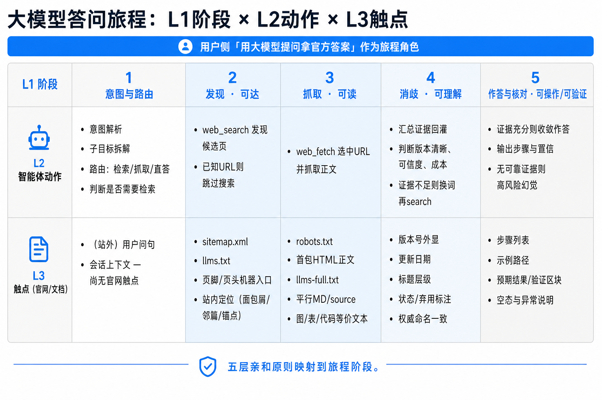
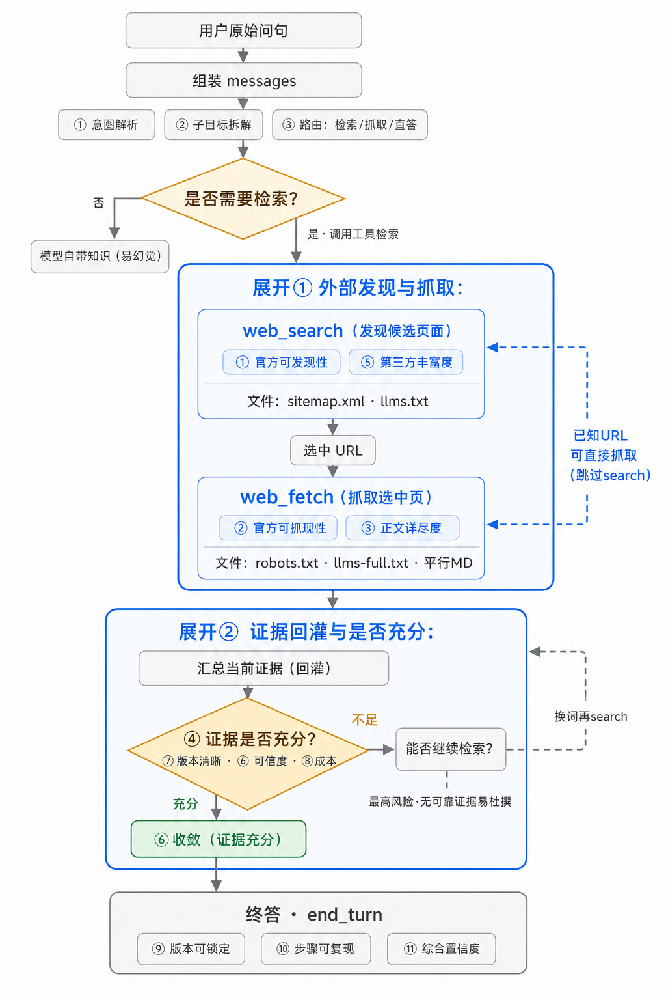

答问检索链路
先用旅程图把全链路拉平为 L1 阶段 × L2 智能体动作 × L3 触点；再用流程图展开决策与回环。蓝框仍对应发现与抓取、证据是否充分。
答问旅程图（L1 / L2 / L3）
横轴为 L1 阶段（对齐五层亲和原则）；纵轴为 L2 智能体动作与 L3 官网/文档触点。改造落点看 L3。
L1 灰区：意图路由 / 终答核对（站侧触点少或偏交付）
L1 蓝区：发现·可达 / 抓取·可读（机器发现层主战场）

全链路流程图
灰区：弱化（意图 / 直答 / 终答）
蓝框：展开（发现抓取 / 证据充分）

四件套与展开环节对照
四件套主要服务蓝框「外部发现与抓取」；「证据是否充分」还依赖页内版本、语义与步骤等后续原则。
| 图中环节 | 主要对应文件 | 说明 |
|---|---|---|
| web_search | sitemap.xml、llms.txt |
发现官方候选 URL / 站级入口地图，提升官方可发现性。 |
| web_fetch | robots.txt、llms-full.txt、平行 MD |
放行与抓取；一次取全文或抓平行源，影响可抓取性与正文详尽度。 |
| 证据是否充分 | 不单靠四件套 | 还看版本清晰、可信度等；四件套保证官方源能进证据池。 |